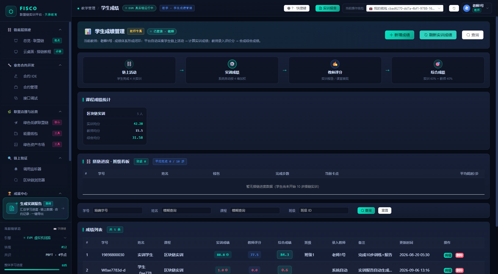
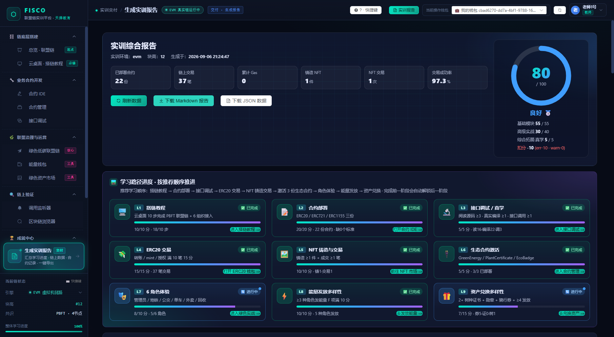

FISCO CHAIN · TRAINING PLATFORM
教师使用手册从开课准备到成绩归档
开课准备 · 课堂演示 · 学情跟踪 · 评分定档 · 演练出题 · 争议处理
适用角色：实训教师（roleId = 3） / 课程管理员（roleId = 1）
本手册中所有按钮路径、公式与数值，均已在真实环境用教师账号逐项验证；文中标注
已知问题 的位置，对应《产品与逻辑问题建议清单》中的编号，
用于解释"为什么平台显示的和预期不一致"，并给出教师侧的可用替代路径。
FISCOChain 联盟链实训平台 · 教师使用手册 HOW TO USE THIS MANUAL
READ FIRST
怎么用这本手册
今天要开课 只做第 03 章的 10 项自检（12 分钟），再按第 04 章的演示脚本走一遍。其余章节留到需要时查。
要给成绩定档 直接看第 05 章（录入 / 预览 / 刷新）与第 06 章（评分量表 + 等级锚点），两页就能出分。
学生说分数不对 看第 07 、11 章：三条学情取数路径 + 六类争议的标准答复话术。
目录
01 教师能做什么：权限矩阵与身份三件套 角色差异 · 数据可见范围 02 登录与会话 · 界面导览 SSO 登录 · 6 组导航 · 引擎切换陷阱 03 开课准备：10 项自检清单 环境 · 数据 · 名单 · 演示账号 04 课堂演示脚本（45 分钟一场） 搭链 → 合约 → 治理 → 验证 05 学生成绩管理：录入 · 预览 · 刷新 四维公式 · 快照与实时 06 教师评分量表与等级建议 评分锚点 · 加减分项 07 学情查看：三条可用路径 班级看板 · 控制台取数 · 卡点定位 08 实训报告的教师视角 九维分值 · 两种口径 · 导出 09 运营沙盘：故障演练出题与判分 4 类故障 · MTTD / MTTR 10 一学期教学闭环 SOP 16 周排期 · 考核权重 11 争议处理 · 数据归档 六类争议标准答复 12 教师侧 FAQ 与故障排查 12 问 12 答 附 A 权限与接口速查表 能给谁用 · 怎么调 附 B 已知问题对教师的影响 编号 · 现象 · 绕法 附 C 评分录入模板与取数脚本 可直接复制使用 FISCOChain 联盟链实训平台 · 教师使用手册 02 / 33
FISCOChain 联盟链实训平台 · 教师使用手册 HOW TO USE THIS MANUAL
开课前必须知道的三件事
① 平台是真链 ，不是仿真：你演示时产生的合约、交易、能量都会进真实数据并被计入某个钱包的报告；
② 教师账号的班级归属目前取不到 （建议清单 P0-1 ），因此"班级看板 / 学情明细"默认是空的，第 07 章给了三条可用的替代路径；
③ 成绩册里除了你录的分，还会有系统自动生成的草稿 （建议清单 P1-8 ），定分前先读第 05 章的"清理草稿"步骤。
CHAPTER 01
教师能做什么：一张权限矩阵说清楚 平台只有三类登录身份：管理员（1） 、教师（3） 、学生（4） 。教师与管理员在代码里被合称
"特权角色"，能力几乎相同；区别只在管理员额外掌握账号与链环境的运维职责。教师不是 只看成绩的角色——
你可以以学生身份完成平台上的任何一步操作 ，这正是课堂演示的基础。
1.1 能力矩阵
能力 教师 管理员 学生 说明（实测结论）
完成全部实训操作（搭链 / IDE / 合约 / 钱包 / NFT / 生态 / 演练处置） ✔ ✔ ✔ 教师账号可完整走通学生流程，用于课前自测与课堂演示 学生成绩管理 /grades ✔ ✔ ✘ 菜单「教学管理 · 学生成绩」仅对教师 / 管理员显示，路由级拦截 查看任意学生的实训报告 接口 接口 仅本人 后端允许教师带 ?wallet= 查任意人；但页面上没有学生选择器 （P1-6），见第 07 章 实时试算某钱包的实训成绩 ✔ ✔ ✘ 成绩对话框内「预览实训成绩」按钮，不落库 运营沙盘：创建场景 / 启动 / 一键停止 ✔ ✔ ✘ 学生只能"提交处置动作"，不能出题与停机 班级学情看板（10 步搭链进度） 空 空 ✘ 依赖 user_info 花名册，当前为空表 → 看板恒空（P0-1 / P0-4） 重置某钱包的搭链进度 ✔ 高危 ✔ 高危 仅本人 云桌面「重置进度」按当前操作钱包 删除进度；教师可代任意钱包，误操作会直接清掉学生的 D 项依据 切换链执行引擎（侧边栏「引擎」） 假 假 假 后端没有 对应接口（实测 POST /api/chain/mode = 404），只改本机显示（P1-17）
FISCOChain 联盟链实训平台 · 教师使用手册 03 / 33
第 01 章 · 教师角色与权限 CHAPTER 01 · ROLE & PERMISSIONS
1.2 身份三件套：账号 / 操作钱包 / 联盟角色
① 登录账号 形如 tzt001。决定菜单可见性与成绩归属（谁录的分）。教师账号来自实训 SSO，学校、班级由 SSO 下发。
② 当前操作钱包 顶栏「当前操作钱包」。教师登录后默认是以账号 ID 命名的钱包 （如 cbad6270-dd7a-…），不是 0x 地址。你的演示数据都挂在它下面。
③ 联盟角色 "绿色低碳联盟链"页里的管理员 / 地铁 / 公交 / 单车 / 外卖 / 回收 6 角色。角色 = 能量发行权，与钱包是两回事。
一句话记住分工
账号 决定你能进哪些页面；钱包 决定这些数据记在谁头上；角色 决定你能不能发行能量。
演示时想"表演一个学生"，正确做法是切角色 ，而不是随便切到一个陌生钱包。
CHAPTER 02
登录、会话恢复与界面导览 2.1 登录（教师账号）
打开平台地址进入登录页，输入账号 （如 tzt001）与密码 ，点击登录 。
平台先调用 /api/auth/encrypt 用 RSA 加密密码，再带 username + passwordEncode 请求 SSO 校验，密码不会明文出网 。
校验通过后，后端签发 24 小时的平台会话令牌（JWT）；前端保存到本地并自动注入后续请求。
登录成功进入总览 页：顶栏右侧出现"老师1号 / 教师"，"当前操作钱包"自动切到你的本人钱包。
24 小时内刷新页面会自动恢复会话；过期后重新登录即可。从 SSO 门户跳转（URL 带 token）会自动完成免密登录。
FISCOChain 联盟链实训平台 · 教师使用手册 04 / 33
第 02 章 · 登录与界面 CHAPTER 02 · LOGIN & UI TOUR
图 2-1 教师登录后的总览页：链状态、协议分布、教学入口与成就榜同屏；下方「班级实训进度看板」在教师身份下会显示为"教师视角 · 班级"。
如果登录失败：提示「[SSO 401] …」或「SSO 登录接口 HTTP 401」
当前版本把密码错误 与SSO 服务异常 都包装成同一个 502/401 提示，无法区分（建议清单 P1-4 ）。
教师侧判断顺序：① 用小写账号、无空格重输一次；② 换浏览器或无痕窗口排除会话残留；
③ 用同班学生账号试登——学生能登而你不能，是 SSO 侧账号状态问题，走教务重置；
④ 都不行则把账号 + 时间点 发给运维查 SSO 日志。不要连续暴力重试 ，可能触发风控锁定。
2.2 左侧导航：与学生完全一致，只多一组
分组 包含页面 教师用途
⛓️ 链底层搭建 总览 · 联盟链 ／ 云桌面 · 搭链教程 课堂演示起点；核对 10 步教程命令是否可执行 🔧 业务合约开发 合约 IDE ／ 合约管理 ／ 接口调试 演示写—编—部—调闭环；A / H / I 项得分点 🌿 联盟治理与运营 绿色低碳联盟链 ／ 能量钱包 ／ 绿色资产市场 6 角色发放与兑换演示；E / F / G / C 项得分点 🔍 链上验证 调用监听器 ／ 区块链浏览器 监管审计视角看全班数据；运营沙盘出题口
FISCOChain 联盟链实训平台 · 教师使用手册 05 / 33
第 02 章 · 登录与界面 CHAPTER 02 · LOGIN & UI TOUR
分组 包含页面 教师用途
🏆 成就中心 成就墙 · 挑战任务 激励工具；排行榜按钱包展示，教师本人也会上榜 🎓 教学管理 （教师 / 管理员可见）学生成绩 录分、刷新、看班级看板 底部大按钮 生成实训报告实训报告 教师打开看到的是全局口径 报告（见第 08 章）
2.3 顶栏与底栏：教师要看懂的四块信息
面包屑 + 阶段标签 「教学管理 / 学生成绩 · 教学 · 学生成绩管理」。左侧彩色标签告诉你当前页面属于哪个教学阶段，与学生看到的完全相同，便于口头指挥"打开阶段 3 的联盟治理页"。
链状态灯 显示 EVM 真实链运行中 ／FISCO 节点已连接 ／本地沙盒模式 。注意 这个灯会被本机覆盖值影响，见 2.4。
当前操作钱包 下拉共 7 项：💼 我的钱包（你本人）+ 6 个联盟角色钱包（0xadmin／0xmetro／0xbus／0xbike／0xtakeout／0xrecycle）。切换即代表"以该身份写链"。
用户卡 / 快捷键 / 报告 用户卡弹出姓名、账号、学校、角色与退出；「? · 快捷键」呼出面板；「实训报告」一键进入报告页。数字键 1–9 直达 9 个主页面。
侧边栏底部「当前链状态」固定展示：引擎 、块高 、共识 PBFT · 4节点 、整体学习进度 。
FISCOChain 联盟链实训平台 · 教师使用手册 06 / 33
第 02 章 · 登录与界面 CHAPTER 02 · UI TOUR
2.4 侧边栏两个"看起来能用、其实别乱点"的控件
图 2-2 侧边栏「引擎」弹层：三个引擎选项 + "切换会重置链状态（块高归零）"的警示文案。
控件 平台承诺的行为 实测真实行为
引擎切换（FISCO / EVM / 本地沙盒） 切换链执行引擎，重置链状态、块高归零 只改你这台电脑的显示 ：后端 POST /api/chain/mode 不存在（实测 404），链照旧运行、块高不变，但顶栏灯与全站"模式"标签会跟着变，极易误判环境 （P1-17）整体学习进度百分比 反映本人 / 本班学习进度 是按页面写死的常量 （学生成绩页固定 88%、报告页 100%），与真实数据无关（P1-5）；看真实进度请用第 07 章路径
课堂上的安全用法
需要确认链环境时，不要点引擎切换 ，改为新开一个浏览器标签访问
http://<平台地址>/api/chain/status，返回的 mode / engine / height 才是后端真实状态。
如果曾误点过切换，把本机记录清掉即可恢复：浏览器控制台执行
localStorage.removeItem('chain_mode_override') 后刷新页面。
CHAPTER 03
开课准备：12 分钟 10 项自检 这 10 项按"不通过就无法上课"排序。第 1–4 项 每次上课前必查；第 5–10 项 开课首周查一次即可。
FISCOChain 联盟链实训平台 · 教师使用手册 07 / 33
第 03 章 · 开课准备 CHAPTER 03 · READINESS CHECK
# 检查项 怎么做（通过标准） 不通过时怎么办
1 平台可访问 浏览器打开平台地址，能看到登录页 确认服务与端口（默认前端 5173 / 后端 8000）；本机调试时确认 npm run dev 与 python run.py 都在跑 2 后端真链在跑 访问 /api/chain/status，mode 为 evm 或 fisco，且执行一次操作后 height 会增长 3 教师登录成功 tzt001 能登录，顶栏显示"教师"按 2.1 的排错顺序处理；必要时先用学生账号完成上课，课后修账号 4 成绩页可进 左侧「教学管理 · 学生成绩」存在，页面能加载出统计卡 URL 直接访问 /#/grades 被弹回首页 = 会话角色不是 3/1，重新登录 5 学生账号已发放 至少 1 个学生账号能登录并看到「我的钱包」 SSO 侧补发账号；已知问题 学生首登需 SSO 返回正常，否则报 401（P1-4） 6 班级花名册 /api/auth/class-students 返回同班学生（教师视角）当前版本恒空（P0-1）。应对 ：用附 C 的花名册模板手工登记"学号—姓名—钱包"，第 05 章录分要用。切勿 手工往 user_info 表里补数据（见附 B 的 P0-4） 7 三份生态合约状态 「绿色低碳联盟链」页显示 3/3 已激活（GreenEnergy / PlantCertificate / EcoBadge） 切到 0xadmin 钱包或联盟管理员角色，用「一键激活」部署；否则全班 H 项 5 分与后续 E/F/G 全被卡住 8 树种已上架 ≥ 2 生态页"植树证书"区可见 ≥ 2 个树种（默认仅"银杏 1000 能量"1 种） 管理员角色 → 添加树种（例：水杉 1500）。不开这一步，学生 G-1 最高只有 4 分（满分 8） 9 勋章与骑行券有库存 生态勋章（10 能量）/ 骑行券（20 能量）可兑换，供应未耗尽 管理员补发供应；骑行券仅"共享单车"角色可发放 10 演示钱包已选定 确定一个"教师演示专用钱包"，并告知学生不要共用 见 3.2 的演示纪律；切勿 直接借用学生钱包演示
第 2 项若返回 mode 为 mock，说明后端起在沙盒模式（不产生真实链上数据），报告与成绩都会偏低，须切回真实链再上课。
3.1 花名册缺失时的手工登记法（开学第一周做一次）因为 user_info 表当前不会被登录流程写入（P0-4，表现为 P0-1），平台无法把"学号—姓名—钱包"关联起来。教师可用的最小闭环是自己建一张对照表 ：
FISCOChain 联盟链实训平台 · 教师使用手册 08 / 33
第 03 章 · 开课准备 CHAPTER 03 · READINESS
让学生登录后进入实训报告 页，把页面右上角生成的本人钱包地址 （学生为 stu:<用户ID> 或 0x 地址）抄给你，或直接截图。
你把它记进附 C 的模板：学号 / 姓名 / 课程 / 钱包 / 班级。
录分时把钱包填进"钱包地址"框，平台即可自动算出该生的实训成绩；学号一定要用学生真实学号 （原因见 5.4）。
需要看某个学生的进度或报告时，用第 07 章的控制台取数法，输入这个钱包即可。
为什么必须"学号 + 钱包"两个都有
成绩记录的唯一键是「学号 + 课程」 ，而实训成绩的计算只认钱包 。只有学号没有钱包 → 实训成绩恒为 0；
只有钱包没有学号 → 系统草稿会用 W<钱包前 10 位> 当学号，产生一条无法归档的幽灵记录。
3.2 演示纪律：四条铁律
铁律 原因
① 用"我的钱包"演示 （教师本人钱包，形如账号 ID） 演示产生的合约 / 交易 / 能量会记进当前操作钱包，并计入该钱包对应 的报告与实训成绩。用本人钱包最干净。 ② 永远不要借学生钱包演示 教师可代任意身份操作（后端 assert_actor_wallet 对特权角色放行）。用学生钱包点一次"重置进度"，该生 D 项与"链搭建"维度依据立刻清零，且不可回滚 。 ③ 联盟角色操作用"选角色" 发能量、兑换资产属于联盟角色行为，用页面里的角色切换完成；顶栏钱包只在你需要"变成某个联盟组织"时才切。 ④ 演练前先声明 运营沙盘的 gas 飙升 场景会真实合成一批链上交易 （配额默认 200 笔、硬顶 600）。这会抬高全班可见的链上交易总量，务必在开演练前告诉学生"这段时间的交易数不纳入个人判断"。
想"从零开始"再演一遍？
链上数据不可回滚，但你不需要清空它：把演示钱包换成一个没用过的联盟角色钱包（如 0xrecycle），
在报告页用 ?wallet= 指定它，就能从 0 分状态完整演一次起步流程。
CHAPTER 04
课堂演示脚本：一场 45 分钟怎么排 平台本身按"学生自主实操"设计，教师的价值不在讲概念，而在把第一步跑通、把评价口径讲明白 。
建议固定用下面的时间盒，四节课（阶段 1→4）走完一学期主线。
FISCOChain 联盟链实训平台 · 教师使用手册 09 / 33
第 04 章 · 课堂演示 CHAPTER 04 · DEMO SCRIPT
0–5 分钟 交代目标
→
5–25 分钟 教师演示
→
25–40 分钟 学生跟做
→
40–45 分钟 抽查交付
4.1 阶段 1 · 云桌面搭链 10 步：教师讲解要点
步 标题（学生看到的） 教师讲解要点 最常见卡点
1 下载官方脚本并生成 4 节点联盟链（证书体系建立） 一条联盟链=4 个节点 + 三层证书（CA / Agency / Node）。强调"证书就是准入凭证" 网络拉取脚本失败：改用教师已备好的 build_chain.sh 2 检查节点进程与证书目录（联盟准入凭证核验） 现场演示 openssl verify：用 CA 验节点证书，讲"准入"与普通链的区别 端口占用 30300 / 20200 → 改端口或先停旧节点 3 检查日志出块（PBFT 共识确认 + 日志分析） 抓 Generating 出块行，说明 4 节点 2f+1 共识（f=1） 看不到出块：节点未全部启动，回到第 1 步末条命令 4 接入控制台（SDK 证书配置 + 链状态查询） SDK 证书是"客户端也要准入"的证据；控制台是运维入口 证书目录复制错路径；start.sh 未在 console 目录执行 5 联盟组织证书与节点归属核查 把"哪个节点属于哪个组织"和治理架构对上，后面 6 角色才不抽象 只看命令不读结论，教师可口头提问抽查 6 6 组织治理规则公示（能量发放规则表） 能量定价就是业务规则：地铁 +50 / 公交 +20 / 单车 +15 / 外卖 +10 / 回收 +100 学生记不住数值，提醒后面每角色都会真实用到 7 注册 6 组织钱包（链上身份登记 + 钱包激活验证） 账户"首次查询即创建"，解释链上账户模型与白名单铸造权 地址少写 0x 前缀；把角色钱包当成自己钱包乱切 8 联盟上线健康检查（节点 + 证书 + 三合约探针） 上线前巡检清单的模板：进程 / 端口 / 证书有效期 / 合约可达 证书有效期命令易抄错，让学生复制而非手打 9 部署 GreenEnergy 绿色能量代币（管理员授权 + Gas 消耗说明） 第一次真实部署：onlyMintController 权限 + 为什么需要管理员授权 用非管理员身份部署被拒 → 正好演示权限模型 10 商业化全链路验证（5 业务角色发放 → 居民持有 + 交易确认） 把 1–9 步串成业务：角色发能量、居民有余额、链上有回执 只做发放不查余额；提醒"验证"才算完成
FISCOChain 联盟链实训平台 · 教师使用手册 10 / 33
第 04 章 · 课堂演示 CHAPTER 04 · DEMO SCRIPT
这一步做完，学生会拿到什么分
10 步全部完成 → 报告 D 项 10 分 （必修），同时"链搭建"维度 +8 分/步；
另外故意做出 1–3 次失败 可拿"探索型学生"+1~3 分。演示时不妨当场敲错一次，告诉学生"报错也被记录、也有分"。
4.2 阶段 2–4 演示动作清单（约 20 分钟）
页面 演示动作（按顺序） 得分点 讲什么
合约 IDE 打开 ERC20 内置模板 → 阅读源码 → 保存到项目 → 真实编译 A / I 三个 ERC 标准的差异；编译只产生字节码，不产生链上数据 合约管理 部署 ERC20 / ERC721 / ERC1155 各一份 A 20 部署才是写链；协议分布 +3/+3/+4 的加分规则 接口调试 选一份合约 → 调 mint / transfer / balanceOf H / I ABI 是什么；state-changing 与 view 调用的区别 能量钱包 做 3–5 笔代币转账，展示余额变化 B 15 满 10 笔才 15 分，提醒学生"多刷几笔不是刷分，是多练" 绿色资产市场 上传一张图 → 铸造 NFT → 挂牌 → 用另一钱包买入 C 10 一级发行 + 二级流转；同时推进生态闭环 绿色低碳联盟链 切 6 角色 → 逐个发能量 → 兑换证书 / 勋章 / 骑行券 E / F / G 权重最高的三兄弟（10 + 10 + 15），一节课做不完就分两节 调用监听器 选合约地址开始监听，让学生看到刚才每个动作的调用流水 证据 "链上不可抵赖"的最直观演示：谁调的、什么参数、成功还是 reverted 区块链浏览器 按交易哈希 / 地址反查一笔刚才的交易 证据 块高、Gas、状态；教学生用回执自证做过 实训报告 点"刷新数据"，现场看九维雷达与提分建议 A–I 结论：分数由服务端重算 ，改前端无效
演示最容易翻车的三处
① 钱包切忘了切回来 ：演示完记得回到"我的钱包"，否则下一步又写进别人的账；
② 能量不够换证书 ：证书 1000 能量，先让"回收公司"（+100/次）发 10 次，再兑换，别现场攒半天；
③ 没有第 2 个树种 ：兑换证书时只有"银杏"，学生拿不满 G-1，按 3.1 自检第 8 项先补树种。
4.3 把课堂交给学生的两个开关FISCOChain 联盟链实训平台 · 教师使用手册 11 / 33
第 04 章 · 课堂演示 CHAPTER 04 · DEMO SCRIPT
验收口令 ：让学生把报告页"提分建议"表格读给你听，第一行 P1 就是他下一步该做的事，教师不必逐个查。同桌互验 ：A 把钱包地址给 B，B 在区块链浏览器地址页查余额与交易，确认 A 真的做过——这比教师检查更高效，也练了浏览器使用。 CHAPTER 05
学生成绩管理：一条数据的完整闭环 「成绩管理」是教师日常使用频率最高的一页。它把平台自动采集的链上行为 和教师主观评价 合成一个综合分，
理解这条链路，后面所有操作都不会迷路。
① 链上活动 学生完成 4 大实训
→
② 实训成绩 系统按 4 维加权
→
③ 教师评分 报告 / 课堂 / 答辩
→
④ 综合成绩 实训 ×60%
5.1 页面六个区块一览

图 5-1 成绩管理页顶部：标题卡（教师专属）+ 四步闭环卡 + 课程统计卡。
区块 看到什么 教师该做什么
① 标题与按钮 「学生成绩管理 · 教师专属」、当前教师姓名，右上三个按钮：新增成绩 / 刷新实训成绩 / 查询 所有写操作都在这三个按钮，其余都是展示
FISCOChain 联盟链实训平台 · 教师使用手册 12 / 33
第 05 章 · 成绩管理 CHAPTER 05 · GRADES
区块 看到什么 教师该做什么
② 闭环说明卡 链上活动 → 实训成绩 → 教师评分 → 综合成绩（实训 60% + 教师 40%） 开学第一课把这四个框指给学生看，说清“我只占 40%” ③ 课程成绩统计 按课程分组：人数、实训均分、教师均分、综合均分 看均分健不健康；教师均分空白 = 还没录分 ④ 搭链进度·班级看板 学号 / 姓名 / 钱包 / 完成步数 x/10 / 当前卡点「Step N · 标题」/ 平均耗时每步 定位卡在哪一步的学生（见 7.1 空态说明） ⑤ 筛选栏 学号（精确）、姓名（模糊）、课程（模糊）、班级 ID 录分前先按班级筛，避免跟同名学生弄混 ⑥ 成绩列表 学号 / 姓名 / 课程 / 实训成绩 / 教师评分 / 综合成绩 / 班级 / 录入教师 / 备注 / 更新时间 / 操作 鼠标悬停“实训成绩”可展开四维明细（见 5.4）
分数颜色怎么读
本页色阶为：≥ 90 优秀（青绿）、≥ 80 良好（主色）、≥ 60 及格（蓝）、< 60 不及格（红）。
而「实训报告」页用的是另一套等级：≥ 90 优秀、≥ 75 良好、≥ 60 合格、≥ 40 待完善、< 40 未完成。两套阈值并不一致 ：
例如 76 分在报告页已是“良好 🥈”，在成绩列表里只显示为蓝色“及格”。对外解释成绩时只选用一个口径，并把差异提前告知学生（详见附录 B）。
5.2 录一份成绩：四步标准动作
筛到本班 ：先在筛选栏填班级 ID（或学号）点「查询」，确认列表只剩自己要处理的学生。新增 ：点右上「新增成绩」，填学号 / 姓名 / 课程名（建议全学期统一填《联盟链实训》，否则统计会被拆散）。贴钱包并预览 ：把学生自己的钱包地址贴进「钱包地址」，点输入框右侧的「预览实训成绩」 ，对话框下方会实时算出三行：实训成绩 / 教师评分 / 综合成绩。打分保存 ：给「教师评分」（0–100，步进 0.5）→ 选填班级 ID 与备注 →「保存」，提示「成绩已录入」。 FISCOChain 联盟链实训平台 · 教师使用手册 13 / 33
第 05 章 · 成绩录入 CHAPTER 05 · ENTRY
图 5-2 对话框内点「预览实训成绩」后的实时回算：先看到结果再保存，避免“存完才发现钱包贴错了”。
5.3 表单字段与平台真实行为
字段 必填 编辑时可改 平台如何处理（实测）
学号 是 否（置灰） 与课程一起构成唯一键 ：同（学号+课程）再存一次是覆盖 而非新增 姓名 是 是 仅展示，不参与匹配；改名学生请直接编辑原记录 课程 是 否（置灰） 课程名自由输入，拼写差异会分裂成多行统计 钱包地址 否 是 不填则实训成绩永远为 0 ；必须是学生实际写链的那个地址教师评分 是 是 默认 80；平台不做区间校验（但接口层限 0–100），完全由量表控制 班级 ID 否 是 不填则看板与统计只能靠“全部”口径看，强烈建议填写 备注 否 是 争议处理时就是证据链，建议写成“依据 + 快照”格式
两位教师用同学号同课程会互相覆盖
保存时后端只按（学号+课程）找记录，不区分录入教师 ；找到就直接 UPDATE，并把
teacher_id / teacher_name 改成当前教师。合班上课或交接评学时，
请先约定好课程名（如《联盟链实训-2026春-A班》）再加后缀区分。
FISCOChain 联盟链实训平台 · 教师使用手册 14 / 33
第 05 章 · 实训成绩公式 CHAPTER 05 · TRAINING FORMULA
5.4 实训成绩四维：公式与权重（与后端一致）四维均为“行为计数 × 单价”封顶 100，再加权求和；四个维度合计占综合成绩 60%。
维度 权重 得分公式（封顶 100） 对应学生动作
链搭建 0.20 打开内置合约×5 + 保存工程×10 + 教程完成步×8 云桌面 10 步教程 + IDE 使用 合约开发 0.30 编译成功×5 + 已部署合约×25 IDE 真实编译 + 合约部署（只部署 4 份就满 100） 链上验证 0.25 接口调用×5 + 合约调用×4 + 链上交易×3 接口调试页 + 转账 / 铸造产生的交易 联盟治理 0.25 角色切换×8 + 能量发放×10 + NFT铸造×6 + NFT交易×5 生态页 + NFT 市场 + 报告页
一分钟算出综合成绩
综合成绩 = 实训成绩 × 0.6 + 教师评分 × 0.4 （保留 1 位小数）。
例：实训 88.8、教师 77.5 → 88.8×0.6 + 77.5×0.4 = 84.3 ，与图 5-1 列表里的综合成绩完全一致。
图 5-3 悬停“实训成绩”弹出的四维明细：每行是「得分 × 权重」+ 原始计数，底部「合计」即实训成绩。
FISCOChain 联盟链实训平台 · 教师使用手册 15 / 33
第 05 章 · 实训成绩公式 CHAPTER 05 · TRAINING FORMULA
这张图就是最好的评学工具
学生来问“我为什么只有 50 分”，不要直接翻成绩单，而是弹开这四个框：
哪个维度低、原始计数是多少一目了然（常见：“已部署合约 1”、“角色切换 0”），指向的是具体页面而非抽象批评。
小缺陷：能量发放、市场成交等少数字段尚未进中文映射，会直接显示英文原名（如 energy_issue ），不影响读数。
5.5 列表里的分数会“过期”，必须手动刷新成绩表存的是录入那一刻的快照 ；学生之后又部署了合约、又发了能量，列表分数不会自己变。
数据 列表快照（实测） 实时重算（同一钱包） 结论
已部署合约 16 19 学生录入后又部署了 3 份 编译成功 3 6 同上，IDE 继续在使用 角色切换 6 13 生态任务完成了更多次 四维得分 100 / 100 / 55 / 100 → 84.3 100 / 100 / 55 / 100 → 88.8 同一公式、不同快照 → 分数对不上
「刷新实训成绩」是全库动作，不只刷本班
点该按钮后，后端会对成绩表中所有已绑钱包的记录 重算实训成绩，
不看班级、不看录入教师、也不受页面筛选条件影响 （弹窗里写的“所有学生”是真话）。
合班 / 多教师并行时，这会把其它班级记录的实训分、综合分一起改写。
安全做法：只在期末统一关分 时点一次，并先导出/截图留档；平时想预览请只用对话框里的「预览实训成绩」（它不写库）。
刷新不改教师评分 ：只重写 training_score / final_score / training_detail / updated_at ，你手录的分数与备注会保留。不绑钱包的记录不会被刷 ：条件为 wallet != '' ；这类行永远停在录入时的分数，请先补钱包再刷。删一条成绩只需一次确认 ：弹窗「确认删除《姓名 · 课程》成绩记录？」点删除就真删，无回收站、不校验班级 ，任何教师都能删任意记录——建议只删自己录入的行，并先导出备份。 FISCOChain 联盟链实训平台 · 教师使用手册 16 / 33
第 05 章 · 刷新与删除 CHAPTER 05 · REFRESH & DELETE
“系统自动”的 0 分草稿行怎么处理
实测截图里能看到：同一个 0xlearner 出现两行，正式录入行综合 84.3，“系统自动”草稿行只有 53.3。
学生每打开一次「实训报告」页，平台会自动写入一条录入教师为 system 、教师评分 0 的草稿成绩；
这类行的学号会被写成 W0xlear… 这种伪学号。处理方式：不要删、不要点刷新 ，
直接对同一钱包用「新增成绩」填真实学号/姓名/班级并保存——保存会命中（学号+课程）以外的另一条时新建，
而你填的真实学号行就是正式行；草稿行不只是观感问题——一旦花名册里有该生真实学号（修好 P0-4 后必然如此），
草稿的 UPDATE 会命中你的正式成绩行 ，把综合分重算为“教师分按 0 计”的低分（在库副本上实测 84.3 → 0.6，班级同时被抹空，P1-25）。
目前因花名册恒空而尚未发生，你只需记住：不要为了看板好看手工往 user_info 补数据 （问题定义见附录 B）。
图 5-4 成绩列表实态：1 行教师录入 + 4 行“系统自动”草稿（伪学号 W0xlear… ），课程均分被明显拉低。
CHAPTER 06
教师评分量表：那 40% 怎么打才有说服力 平台只保证“教师评分计入加权”，不校验你给多少分 。一份能顶住复核的成绩，靠的是固定量表 + 可追证据。
以下量表是本校实训语境下的推荐做法，可直接拿来用。
FISCOChain 联盟链实训平台 · 教师使用手册 17 / 33
第 06 章 · 评分量表 CHAPTER 06 · RUBRIC
6.1 四子项 100 分制
子项 分值 看什么 拿满标准
报告完成度 30 实训报告九维雷达与提分建议表 必修项（D/E/H）全部拿满，提建议里不再出现红色（error）条目 链上证据 25 区块链浏览器 + 调用监听器里的回执 能用自己的交易哈希说出“哪笔、何时、什么参数” 口头答辩 25 3 问：为何要 CA 证书？mint 与 transfer 区别？为何只能管理员铸造？ 三问都能用业务语言回答，不只背命令 规范与协作 20 学号↔钱包一致性、命名、备注、互验记录 花名册上一钱包一人，无互借钱包
分数带 教师评分 描述（写进备注栏的句式）
优秀 90–100 九维 ≥ 8 项满值，能解释权限模型与共识；答辩三问全对 良好 80–89 主流程完整，1–2 处依赖提示才能完成；证据链齐全 合格 65–79 能跑通但说不清为何这么跑；报告只到 C/B 水平 待完善 50–64 关键步骤缺口（未部合约 / 未切角色），但已交钱包与回执 不合格 0–49 无链上痕迹、钱包与学号对不上、或沿用他人钱包
6.2 教师分的杠杆有多大以同一个实训成绩 88.8 的学生为例（真实账号 0xlearner）：
教师评分 综合成绩 成绩页色阶 一句话点评
60 77.3 及格（蓝） 实操很好但表达/规范差，会被拉到及格带 70 81.3 良好 中性评价，不会抹杀努力 80 85.3 良好 手松一点打分，仍在良好带 90 89.3 良好（差 0.7 到优秀） 想送学生进优秀带，教师分得给满 92 以上
FISCOChain 联盟链实训平台 · 教师使用手册 18 / 33
第 06 章 · 评分量表 CHAPTER 06 · RUBRIC
三种常见误用
① 把实训分再打一遍 ：看到实训 90 就手录 90，实际只拉高了已自动计入的 60%，对区分度无帮助；教师分应该量“报告 + 表达 + 规范”。
② 全班统一 80 ：统计卡上“教师均分 80”看似安全，但学生综合分完全由链上行为决定，沉默的学生无法被看到。
③ 先给分后绑钱包 ：不填钱包保存后，综合分 = 0×0.6 + 教师分×0.4，一个给 90 分的学生只能拿 36 分。
CHAPTER 07
学情查看：页面空着时，数据从哪里捞 平台提供了三个学情入口，但当前版本下有两个会空。先说清“空不等于没数据”，再说可用的第三条路。
路径 看什么 当前可用性（实测）
① 总览·班级学情卡 班级人数 / 平均完成步数 x/10 / 平均进度 / 平均实训成绩 + 步骤 1–10 完成率柱条 空 显示“暂无同班学生数据”② 成绩管理·搭链进度看板 逐人：学号 / 姓名 / 钱包 / 完成步数 / 当前卡点 / 平均耗时 空 同一根因；标签会显示“全部班级”③ 只读接口 + 控制台 任意钱包的逐步进度 / 四维得分 / 九维报告 / 任务证据 可用 需 F12 粘一段脚本，见 7.2
FISCOChain 联盟链实训平台 · 教师使用手册 19 / 33
第 07 章 · 学情查看 CHAPTER 07 · INSIGHTS
图 7-1 总览页“班级学情”空态：这不是学生没做，而是教师账号拿不到班级归属。
根因：教师账号没有可用的班级归属（P0-1），而花名册从未落库（P0-4）
实测登录返回：classId="0" 、className=null ；更根本的是后端 user_info 表一行都没有 ——登录时写花名册必抛异常且被静默吞掉（P0-4）。
因此按班级聚合的三个接口（/auth/class-students 、/auth/platform-progress 、/chain/tutorial/progress/class ）均返回空。
但同一个空值在成绩列表里是“取不到班级就不过滤”，所以看板是空的、列表却是全校的 ——两者矛盾属平台缺陷，不是你的误操作。
7.1 短期可用的替代做法
筛选栏手动填班级 ：成绩页筛选栏的“班级 ID”是精确匹配，填学生成绩里已有的值（如 班级1 ）能正常收敛到本班。花名册自己维护 （见 3.1）：把“学号 ↔ 姓名 ↔ 钱包”当权威源，所有取数以钱包为主键。看过报告页的全局口径 ：它不依赖班级，能拿到链高 / 合约数 / 调用量等硬指标（见 8.1）。 7.2 六个只读接口，绕开所有班级问题
接口（均需已登录，自动带 JWT） 关键返回 用途
GET /api/chain/tutorial/progress?wallet= done_count / total_steps / percent / steps[] 逐人定位卡在哪一步
FISCOChain 联盟链实训平台 · 教师使用手册 20 / 33
第 07 章 · 取数手册 CHAPTER 07 · READ-ONLY APIs
接口（均需已登录，自动带 JWT） 关键返回 用途
POST /api/grades/compute-training training_score / detail / final_score 不落库的四维实时重算（录分前预览） GET /api/grades/my?wallet= grades[] / total / training_now / detail_now 看某个学生被录入过哪些成绩，并存对比（发现重复行） GET /api/missions/curriculum?wallet= verified_count / items[].verify.evidence 任务完成“链上证据”，可直接引用到评语 GET /api/report/aggregate?wallet= score / level / breakdown[9] 指定学生的九维报告（页面不提供此入口） GET /api/grades/list?class_id= items[] / total 已知班级值时按班收敛成绩名单
全量盘点类接口（不依赖班级）：/api/explorer/overview （块高 / 交易数 / 合约协议分布）、/api/eco/audit/overview （调用成功与异常清单）。实测参考值：块高 12、交易 37、合约 22（ERC20 8 / ERC721 3 / ERC1155 5 / 自定义 6）。
7.3 控制台批量取数（推荐收藏）// 在平台页面按 F12 → Console，粘贴运行：一次算完全班实训成绩与卡点
const token = localStorage.getItem('auth_token' );
const roster = [ '0xlearner' , '0x…' ]; // 从花名册粘贴钱包清单
for (const w of roster) {
const h = { 'Content-Type' : 'application/json' , Authorization: 'Bearer ' + token };
const g = await fetch('/api/grades/compute-training' , { method: 'POST' , headers: h,
body: JSON.stringify({ wallet: w, manual_score: 80 }) }).then(r => r.json());
const p = await fetch(`/api/chain/tutorial/progress?wallet=${w}` , { headers: h }).then(r => r.json());
const stuck = (p.steps || []).find(s => !s.done);
console.log(w, '实训' , g.training_score, '综合(按80)' , g.final_score, '搭链' , p.done_count + '/' + p.total_steps,
'卡在 Step' , stuck ? stuck.step : '—' );
}脚本全部走只读接口，不写库；compute-training 只传 manual_score=80 供参考，不影响已存成绩。
7.4 读数时注意两个坑
done_count 与 steps[] 可能不自洽 ：实测某钱包 done_count=6 / percent=60 ，但 steps 里 Step 1 的 done=false 。以 done_count 为准，“第一个未 done 的步骤”当作卡点参考而非结论（已记进建议清单 P2-21）。任务进度与成绩不同源 ：missions/curriculum 实测 verified_count=9/10，而 tutorial/progress 只算到 6/10；前者是“任务认定”，后者是“步骤记录”，跟学生解释时只用一个。 CHAPTER 08
实训报告：两个口径、九维明细、一个导出陷阱 FISCOChain 联盟链实训平台 · 教师使用手册 21 / 33
第 08 章 · 实训报告 CHAPTER 08 · REPORT
报告页是评分时最常用的依据，但它与成绩表不同源 ，而且教师看到的默认是全校合并卷。
8.1 你打开报告页看到的是哪一份
口径 入口 得分 等级 取数范围
全局报告 报告页默认 80 良好 🥈 全链汇总：所有合约 / 所有调用 / 所有生态行为 个人报告 ?wallet= 43 待完善 🚧 仅该钱包名下的行为（实测：同一个 0xlearner）

图 8-1 教师打开报告页看到的全局卷：顶部大分是全链汇总，不是任何一个学生的分数。
页面上没有“选学生”的入口（P1-6）
教师账号的报告页从不传 wallet 参数 ，因此只能看到全局口径；
要看某个学生的九维，只能走接口：GET /api/report/aggregate?wallet=学生钱包 。
同理，/api/report/download 也永远导的是全局卷，文件名固定
report.md / report.json （实测 md 约 15 KB）。
归档个人报告的正确做法 ：让学生自己在报告页点导出（学生登录时传的是自己钱包），文件名手写“学号-姓名-report.md”后提交。教师留档 ：用 7.3 的控制台脚本把 /api/report/aggregate?wallet= 的结果另存为 JSON，一份一个钱包，不会串味。 8.2 九维评分细则（A–I）与教师核查动作FISCOChain 联盟链实训平台 · 教师使用手册 22 / 33
第 08 章 · 九维拆解 CHAPTER 08 · NINE DIMENSIONS
维度 满分 给分规则（与后端一致） 教师核查方式
A 合约部署 20 ≥ 1 份 +10；ERC20 / ERC721 / ERC1155 另计 +3 / +3 / +4 合约管理列表：看份数与协议分布 B 链上交易 15 ≥ 10 笔 15；≥ 5 笔 10；≥ 2 笔 5；≥ 1 笔 2 区块链浏览器交易列表（个人口径可能恒为 0，见 P0-3） C NFT 10 铸造 ≥ 1 +5；市场成交 ≥ 1 +5 NFT 市场“我的铸造 / 挂单” D 搭链教程（必修） 10 10/10 → 10；≥ 5 → 6；≥ 1 → 2；失败尝试 +1~3 /chain/tutorial/progress?wallet= E 角色与节点体验 10 6/6 → 10；≥ 4 → 8；≥ 2 → 5；≥ 1 → 2 生态页角色切换记录（四维里的“角色切换”） F 能量发放多样性 10 3 种角色 → 10；2 种 → 6；1 种且 ≥ 3 次 → 3 发放流水的角色分布 G 资产兑换 15 证书：≥ 2 树种 8 / 1 树种 4；勋章+骑行券都换 4；发放角色 ≥ 4 种 +3 环境仅 1 个树种时，G-1 天花板 4 分（P2-13） H 生态合约激活 5 GreenEnergy / PlantCertificate / EcoBadge：3/3 → 5；2/3 → 2；1/3 → 1 合约管理里三份系统合约是否可调用 I 综合拓展 5 读源码 ≥ 3 +2；真实编译 ≥ 1 +1；接口调试 ≥ 1 +2 IDE 行为 + 接口调试记录 P 操作扣分 ≤ 15 错误调用每条 −1（上限 −10）；警告每条 −0.3（上限 −5）；合计不超 15 /eco/audit/overview 异常清单（实测 −10）
扣分不要当“态度分”用
当前版本里只读函数调用失败也计入错误 （如 name / decimals 对未部署地址返回
“Tried to read 32 bytes, only got 0 bytes.”），实测全局 10 次调用 5 次失败、成功率 50%，直接扣满 10 分（P2-9）。
评分时先看失败记录是不是只读调用，否则会对认真探路的学生不公。
CHAPTER 09
运营沙盘：出题、跑轮、判分 沙盘在「运行监控」页内，教师建场景并启轮，学生看到故障后提交处置动作，系统自动算 MTTD / MTTR。
它是平台里唯一能量化「反应速度」的模块：除了链上做了多少分，还能看谁先把故障修好。
FISCOChain 联盟链实训平台 · 教师使用手册 23 / 33
第 09 章 · 运营沙盘 CHAPTER 09 · SANDBOX
图 9-1 运行监控页的运营沙盘区：场景列表 + 轮次参数 + 记分板。
9.1 四类故障与对症处置（判分核心）
场景 学生看到的可观测现象 对症动作（命中才推 MTTD/处置率） 满分动作
节点宕机 node_down 节点列表里指定编号节点离线（云桌面 / 监控同步读取故障态） 重启节点 1 种 共识停滞 consensus_stall 展示“出块暂停”，且轮次期间不再有新交易入块 重启节点 + 修复重部署 2 种 凭证重放攻击 replay_attack 审计列表出现两条同一 proof_no 的可疑能量记录 重放审计 1 种 gas 飙升 gas_spike 平均 Gas 上抬，伴随一批低价值转账 修复重部署 + 交易限流 2 种
出题前必知三条
① gas_spike 会走真实 chain_client 合成转账 （1–40 笔），会计入链上交易与课堂数据；
② replay_attack 会向能量记录表插两条脏数据 ，只增不改不删，但会留在审计列表里；
③ 故障注入不会删改学生真实数据，可放心演示；轮次停止后“共识暂停”标记自动解除。
FISCOChain 联盟链实训平台 · 教师使用手册 24 / 33
第 09 章 · 运营沙盘 CHAPTER 09 · SANDBOX
9.2 轮次参数与安全红线
参数 取值范围 默认 课堂建议
目标 TPS 0.1 – 5.0（硬顶） 1.0 入门课 0.5，对比课用 3.0 看吞吐差异 轮次时长 10 – 600 秒 120 课堂用 120–180 秒，不占满下课时间 交易配额 1 – 600（硬顶） 200 控制总量首选改小配额，比改 TPS 更可预测 节点编号 0 – 3 0 四个节点对应四个组织，换不同编号宕机可自然带出治理话题
同一班级同时只允许一个进行中轮次；教师可一键停止（/rounds/{id}/stop ），
停止接口会等待负载线程退出，不会出现“停了还在写链”。
9.3 四个 KPI 到底在算什么
KPI 官方口径 读法与陷阱
mttd_seconds 故障注入 → 首个 处置动作的秒数 乱提交动作也会把它变小，因此单看 MTTD 会奖励“猜” mttr_seconds 故障注入 → 首个对症 动作的秒数；未恢复记 −1 −1 不是“负秒数”，是“没修好”；统计前先排除 −1 handle_rate 已命中对症动作种类 / 场景应有种类 × 100 共识停滞与 gas 飙升需要 2 种动作才到 100% success_rate 合成交易成功数 / 尝试数；无尝试记 100 刚启轮就看到 100%，不代表健康
记分板每 10 秒采一次样（写 ops_kpis 并推 sandbox_kpi 事件），
因此学生提交动作后最多等 10 秒才会看到曲线变化，不是卡死。
9.4 把沙盘成绩归入教师分
A 档・+90~100 MTTR ≤ 30s 一次提交即对症，处置率 100%，能说出为何这么修。
B 档・+75~89 MTTR ≤ 60s 先误提交一次再对症，最终处置率 100%。
C 档・< 75 MTTR = −1 始终未命中对症动作，或只靠“重启节点”处理一切场景。
FISCOChain 联盟链实训平台 · 教师使用手册 25 / 33
第 09 章 · 沙盘记分 CHAPTER 09 · SCORING
开课前必做的一个验证：师生是否同一个“班”
沙盘所有数据（场景 / 轮次 / 故障态）都按登录凭据里的 class_id 严格隔离，
而教师账号的 class_id 当前为 "0" （P0-1 同源问题）。
如果学生凭据里的班级不是 "0" ，你建的轮次学生会永远看不到（/rounds/active 返回空）。
验收方法 ：用教师账号建一轮 10 秒的短轮 → 叫一个学生刷新监控页 → 看不到故障就换班级值重建，或请运维先补齐班级字段。
CHAPTER 10
一学期怎么推：16 周教学节奏表 平台没有“开课 / 锁课”概念，所有数据实时累积。因此教师需要自己制造节奏：
下表的三个检查点就是防止学生堆到期末一次性交作业的关卡。
周次 教学目标 平台动作（教师） 产出物 / 验收
第 1 周 开卡与基线 跑完 3.1 十项自检；建花名册（学号·姓名·钱包）；自己用演示钱包跑一遍 10 步 花名册 v1；演示钱包基线分 第 2–3 周 阶段 1 搭链 按第 4 章脚本授课；课后用 7.3 脚本拉全班 done_count done_count ≥ 8 视为达标，低者第 4 周重点辅导 第 4–6 周 阶段 2 合约与交易 盯 A / B / I 三项；要学生把部署回执发群里，教师抽查 检查点① ：人人 ≥ 1 份合约 + ≥ 5 笔交易第 7–10 周 阶段 3 生态闭环 盯 E / F / G / H 四项（占报告 40 分）；先补树种（见 3.1 第 8 项） 检查点②・期中 ：先录一次教师分（不点刷新）第 11–13 周 阶段 4 资产与运营 NFT 铸造 + 挂牌成交；排 1 节沙盘课（第 9 章） 每人 ≥ 1 次完整处置记录（MTTR ≠ −1） 第 14–15 周 逐人答辩 5 分钟/人：看报告九维 + 三问；当场算教师分 量表四子项得分表（附录 C） 第 16 周 关分与归档 留档→点一次「刷新实训成绩」→导出→复核异常行→归档 成绩包（见 11.3）
FISCOChain 联盟链实训平台 · 教师使用手册 26 / 33
第 10 章 · 学期节奏 CHAPTER 10 · SEMESTER SOP
日常巡检 每 2 周一次 只拉两个数：全班 done_count 均值与 /explorer/overview 交易总量。低于预期就在下节课安排集体实操。
防刷分 看结构不看总分 四维明细里“链上验证”满、“联盟治理”为 0，典型只刷调用不做业务；反之则只堆次数。
临下课前 两句话验收 “报出你的钱包地址”+“打开报告页读第一行提分建议”。做不到就是没真正做。
11.1 五步处理成绩争议
① 接诉 先收钱包地址
→
② 取数 grades/my tutorial/progress report/aggregate
→
③ 比对 快照 vs 实时
→
④ 结论 改分或维持
→
⑤ 留痕 备注栏写清
学生说法 真实原因 标准答复
“我做了很多，分数没涨” 列表是录入时的快照；或成绩行根本没绑钱包 先查绑没绑；已绑则告知统一刷新时点，不给个别人刷（会影响全校） “为什么我 43 分，他 80 分？” 两个口径：个人报告 vs 全局报告 43 是你的个人九维，80 是全校合并卷，不能互比；你的成绩以成绩表为准 “调用失败凭什么扣分” 只读调用失败也计入错误（P2-9）；而这些失败的目标多为链重置后已作废的旧合约地址 （P2-14） 查出失败函数名：若全为 name/decimals 类只读调用，不扣，备注写明原因 “列表里有两个我” 系统草稿行（P1-8） 带真实学号的那行才是正式成绩，W0x… 那行忽略 “换电脑后钱包变了” 钱包标识不统一（P0-2） 链上数据跟钱包走，不跟人走；从此刻固定一个钱包并告知你修改成绩行
11.2 备注栏标准句式备注 = 依据 + 快照日 + 结论，例：
“答辩通过；依据=A/H/I 满、链上回执 0x3f…9a；
快照 2026-06-18；报告 43 为个人口径，与成绩不互比。” 11.3 期末归档清单（缺一不可）FISCOChain 联盟链实训平台 · 教师使用手册 27 / 33
第 11 章 · 争议与归档 CHAPTER 11 · DISPUTES
花名册终版 ：学号 · 姓名 · 钱包 · 班级，一人一钱包，无重复地址。成绩表导出 ：刷新后的完整列表（含实训 / 教师 / 综合三列与更新时间）。逐人报告 ：学号-姓名-report.md ，由学生自己导出提交。答辩记分表 ：四子项得分与教师签名，对应教师评分的构成。异常台账 ：本次遇到的平台问题（哪个编号、影响哪几个学生），供下一轮开课预判。
一句话原则
链上数据不可改，成绩可以改，但必须留痕。 任何一次改分都要在备注里写清依据与日期；
没留痕的改分，在复核时与错录无法区分。
CHAPTER 12
教师 FAQ：14 个真机问过的问题
问题 答案
登录一直转圈或报 502？ 先确认后端在跑；若是 SSO 回调失败会被包成 502（P1-4），改用账号 + 密码登录。密码需加密后提交，界面会自动处理（P0 场景见 2.1）。 为什么看不到本班学生名单？ 教师账号班级归属为空（P0-1）。用成绩页筛选栏手填班级 ID，或用 7.3 脚本按钱包取数。 为什么成绩列表里有别的班的学生？ 同一个根因的另一面：取不到班级时列表不过滤（P0-1）。别默认「列表=我班学生」。 报告页 80 分，学生说他 43 分？ 页面显示的是全局合并卷，个人口径要带 ?wallet= （P1-6 / P1-7）。 「刷新实训成绩」能点几次？ 建议只在期末关分时点一次。它是全库动作，会连带改写其它班级的记录（P1-18）。 想临时看某个学生的真实分？ 用对话框里的「预览实训成绩」（compute-training ），它不写库，随便点。 学生换了钱包怎么办？ 编辑该生成绩行、替换钱包地址、保存即重算；旧地址上的链上数据不会迁移，务必在备注里记明更换日期。 能不能删掉一条成绩？ 能，但无班级与归属校验（P1-19），删了不可恢复。误删就按同样（学号+课程）重新录入即可复原。 两个老师教同一门课会冲突吗？ 会。同（学号+课程）后保存者覆盖前者，且「录入教师」会变成后者（P2-20）。请用课程名后缀分班。 「切换引擎」按钮要按吗？ 不要。当前版本它是假动作（请求 404 被静默忽略，P1-17），还会污染顶链链类型标识；真要确认引擎请看 /api/chain/status 。
FISCOChain 联盟链实训平台 · 教师使用手册 28 / 33
第 12 章 · 常见问题 CHAPTER 12 · FAQ
问题 答案
云桌面第 1–5 步是真实上链吗？ 前半段为教学仿真、后半段真实（P2-11）。写教学材料与学生报告时要区分描述。 沙盘轮次建好了，学生说看不到？ 先验班级一致性（P0-1 同源）：教师 class_id 与学生不同时，/rounds/active 永远为空。 侧边栏「整体学习进度」能当学情看吗？ 不能，那是界面固定值（P1-5）。看真实进度请用报告页与总览页。 成就中心排行榜上为什么有一串 UUID？ 那是没绑定钱包的账户标识（含教师自己的钱包，P3-23）。评奖时请以学号 + 钱包人工核对，不要直接拿榜单截图。
APPENDIX A
页面与接口速查 A.1 页面地图（hash 路由）
路由 菜单名 权限 教师常用动作
#/dashboard 总览 全体 看班级学情（当前空态）、平台关键指标 #/cloud 搭链云桌面 全体 10 步搭链演示；【高危】重置进度会删链上数据 #/ide 合约 IDE 全体 打开内置模板、阅读源码、真实编译 #/contracts 合约管理 全体 部署与查看合约清单 #/interfaces 接口调试 全体 按 ABI 调用读写函数（I 项与链上验证） #/monitor 调用监听器 全体 选合约监听调用流水；运营沙盘在此页 #/explorer 区块链浏览器 全体 按哈希 / 地址反查，学生互验主要工具 #/nft NFT 交易市场 全体 铸造、挂牌、购买 #/wallet ERC20 钱包 全体 转账刷交易笔数（B 项） #/eco 绿色低碳联盟链 全体 6 角色切换、发能量、兑换证书/勋章/券 #/report 实训报告 全体 全局九维；个人口径需带 ?wallet= #/my-grades 我的成绩 全体 以当前顶链钱包为准，教师看的是自己的 #/achievements 成就中心 全体 成就与积分榜（注意 UUID 噪声）
FISCOChain 联盟链实训平台 · 教师使用手册 29 / 33
附录 A · 速查 APPENDIX A · CHEATSHEET
路由 菜单名 权限 教师常用动作
#/grades 学生成绩 教师专属 录分、刷新、看板；非教师访问会跳回总览
A.2 教师高频接口
接口 方法 写库？
/api/grades/list · /stats GET 否 /api/grades/my?wallet= GET 否 /api/grades/compute-training POST 否（实时重算预览） /api/grades/upsert POST 是 （新增或覆盖成绩行）/api/grades/{id} DELETE 是 （不可恢复）/api/grades/refresh-training POST 是・全库 /api/chain/tutorial/progress?wallet= GET 否 /api/report/aggregate[?wallet=] GET 否（但会触发草稿行，见 P1-8） /api/missions/curriculum?wallet= GET 否 /api/sandbox/scenarios · /rounds/start · /rounds/{id}/stop GET/POST 是 （建场景 / 起停轮次）
APPENDIX B
已知问题对教师的实际影响 编号与《产品与逻辑问题建议清单》一致，方便报请运维或对照修复进度。
编号 等级 现象 教师应对（本手册已写入流程）
P0-1 P0 教师班级归属为空：看板/花名册空，但成绩列表不外过滤 花名册自建（3.1）+ 筛选栏手填班级（7.1）+ 脚本取数（7.3）
FISCOChain 联盟链实训平台 · 教师使用手册 30 / 33
附录 B · 已知问题 APPENDIX B · KNOWN ISSUES
编号 等级 现象 教师应对（本手册已写入流程）
P0-4 P0 花名册 user_info 恒 0 行：登录写库抛错被吞，是 P0-1 的直接根因 同 P0-1；切勿 手工往该表塞数据——那会让系统草稿覆盖你的正式成绩（P1-25） P0-2 P0 钱包标识分裂：UUID / 0x… / 带 stu: 标记，三种写法并存 录分只认学生实际写链地址，一人一钱包入册 P0-3 P0 个人报告交易笔数为 0，但全链已有 37 笔 不拿 B 项当“没做”证据，改查浏览器地址页 P1-5 P1 侧边栏进度为界面固定值 不当学情看，已在 2.4 提醒 P1-6 P1 报告页无学生选择器，导出恒为全局 个人报告走接口；归档让学生自己导出 P1-7 P1 同一学生“成绩 88.8 / 报告 43” 只用一个口径解释，已在 11.1 给话术 P1-8 P1 学生一打开报告页就多出“系统自动”草稿行 不删不刷，新建真实学号行为正式行（5.5） P1-17 P1 引擎切换请求 404 被静默忽略，却提示成功 不演示、不依赖；用 /api/chain/status 核实 P1-18 P1 刷新实训成绩为全库动作，不分班级 只在期末点一次，提前留档 P1-19 P1 删除成绩无班级/归属校验、无回收站 只删自己录入的行；删前导出 P2-9 P2 只读调用失败也计入错误，直接扣满 10 分 扣分前看函数名；必要时备注抵消 P2-10 P2 成绩列表是录入快照，不自动重算 用预览/接口看实时值，列表只当台账 P2-11 P2 云桌面 1–5 步为仿真回放 演示与写报告时区分真假上链 P2-13 P2 环境仅 1 个树种，G-1 天花板 4 分 开课前管理员补第二个树种（3.1 第 8 项） P2-20 P2 同（学号+课程）跨教师互相覆盖，录入教师被改写 课程名加班级后缀；定期与另一位教师互查
FISCOChain 联盟链实训平台 · 教师使用手册 31 / 33
附录 B · 已知问题 APPENDIX B · KNOWN ISSUES
编号 等级 现象 教师应对（本手册已写入流程）
P2-21 P2 done_count 与 steps[].done 不自洽 以 done_count 为准，卡点当参考 P2-22 P2 成绩页色阶与报告页等级阈值不一致 对外只用一套描述（建议用报告页等级） P3-23 P3 成就榜以 UUID 裸展示，教师本人也上榜 评奖人工校学号+钱包 P3-24 P3 四维明细部分指标无中文标签 口头补充含义即可，不影响读数
APPENDIX C
可直接拷贝的三张表 C.1 花名册模板（开课第一周建立，全学期只认这一份）
学号 姓名 钱包地址（完整 42 位） 班级 登记日期 / 备注
19898800030 实训学生 0xlearner 班级1 演示账，8 月 25 日登记 20260100101 张三 0x44bfd612de0c6bd923b8ebcbdd4c0d043a4c6dda 班级1 顶栏“我的钱包”复制而来 20260100102 李四 — 班级1 未交钱包，不得录入成绩
C.2 答辩记分卡（对应第 6 章量表，合计即教师评分）
子项 满分 得分 现场依据（必填一句话）
报告完成度 30 ___ 九维已到满分项：＿＿＿＿；仍为 0 项：＿＿＿＿ 链上证据 25 ___ 回执哈希前 6 位：0x＿＿＿＿ 口头答辩 25 ___ 三问对＿＿问；精彩/疑点：＿＿＿＿ 规范与协作 20 ___ 学号↔钱包一致：是 / 否 合计＝教师评分 100 ___ 写入成绩行备注：“答辩 06-18，30+25+20+18”
FISCOChain 联盟链实训平台 · 教师使用手册 32 / 33
附录 C · 模板 APPENDIX C · TEMPLATES
C.3 两张检查卡
开课前（第 1 周）
3.1 十项自检全部通过
自己演示钱包有完整基线数据
花名册已收齐钱包，无一人两钱包
课程名已定死（含班级后缀）
已知问题清单已发学生（避免课上反复问）
期末关分（第 16 周）
逐人核对钱包与学号，补登缺失行
导出/截图留档后再点刷新（全库）
刷新后扫一遍异常行（0 分 / 重复 / 未绑）
每人一份 report.md + 一张记分卡
异常台账回填，供下学期开课参考
版本、取证与口径声明
项 说明
适用产品 FISCOChain 联盟链实训平台（前端 Vue3 + Element Plus，后端 FastAPI + SQLite，链为 FISCO-BCOS 2.9.1，CHAIN_MODE=evm） 取证时间 2026-09-06，本地环境（前端 5173 / 后端 8000）实机运行 取证账号 教师 tzt001 （角色 roleId=3、学校“天择大学”、classId="0"）；学生侧数据以演示钱包 0xlearner 与本地签发账号取证 取证手段 界面实机操作 + 只读接口拉取 + 后端源码校对三管齐下；所有截图均为真机抓取，未做修饰 写入限制 取证过程中未修改任何学生真实数据 ；仅使用不写库的预览接口与只读查询 数字口径 文中块高 12 / 交易 37 / 合约 22 / 调用 10（50% 成功）等均为当时快照，实际以页面与接口为准
本手册怎么读
第一遍只读三页：「开课三件事」（P.3）、第 03 章自检、第 05 章录分。能跑通一次课再回头补第 06、第 09 章。
手册中标【高危】【假动作】的部分不随版本升级自动失效，换环境后请重跑 3.1 十项自检再下结论。
FISCOChain 联盟链实训平台 · 教师使用手册 33 / 33